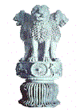

| |
 |
Phật Giáo Nguyên Thủy
Nghi Thức Tụng Niệm
Giáo Hội Tăng Già Nguyên
Thủy Việt Nam
|
 |
|
Lưu ý:
Ðọc với phông chữ VU Times
(Viet-Pali Unicode) |
Chương V - Khóa Lễ Anh
ngữ
Khoá lễ Anh ngữ nầy được in trong quyển nghi thức tụng niệm với mục
đích đáp ứng nhu cầu ngày một nhiều của tầng lớp Phật tử ở hải ngoại. Ðây
chỉ là khoá lễ nhật hành căn bản, trong trường hợp cần thêm các kinh văn
bằng tiếng Anh có thể trực tiếp sử dụng các nghi thức tụng niệm bằng Anh
ngữ vốn rất dễ tìm. Nghi thức nầy được sắp xếp theo truyền thống Tích Lan,
soạn dịch bởi Ngài Henepola Gunaratana Mahathera. Trích đoạn vói sự đồng ý
của soạn giả.
Salutation to the Buddha
I pay homage to the Blessed One, the Worthy One, the Fully
Enlightened One
(Three times)
Three refuges
I go to the Buddha for refuge
I go to the Dhamma for refuge
I go to the Sangha for refuge
A second time I go to the Buddha for refuge
A second time I go to the Dhamma for refuge
A second time I go to the Sangha for refuge
A third time I go to the Buddha for refuge
A third time I go to the Dhamma for refuge
A third time I go to the Sangha for refuge
Five Precepts
I undertake the trainning rule to abstain from taking life
I undertake the trainning rule to abstain from stealing
I undertake the trainning rule to abstain from sexual misconduct
I undertake the trainning rule to abstain from false speech
I undertake the trainning rule to abstain from intoxicating
HOMAGE TO THE BUDDHA
Such, indeed, is the Exalted One: worthy, perfectly enlightened,
endowed with knowledge and conduct, well-gone, knower of the worlds,
supreme trainer of persons to be tamed, teacher of gods and humans,
enlightened and exalted.
To the Buddhas of the past
To the Buddhas of the future
To the Buddhas of the present
I offer my reverence always.
For me there is no other refuge
The Buddha is my matchless refuge
By these words of truth
May joyous victory be mine
With my forehead I pay reverence
To the dust at His feet
If I have done wrong to the Buddha
May the Buddha please forgive me
HOMAGE TO THE DHAMMA
Well expounded is the Dhamma by the Exalted One, directly visible,
immediately effective, calling one to come and see, leading onwards, to
be personally realized by the wise.
To the Dhammas of the past
To the Dhammas of the future
To the Dhammas of the present
I offer my reverence always.
For me there is no other refuge
The Dhamma is my matchless refuge
By these words of truth
May joyous victory be mine
With my forehead I pay reverence
To the matchless threefold Dhamma
If I have done wrong to the Dhamma
May the Dhamma please forgive me
HOMAGE TO THE SANGHA
The Order of the Exalted One's disciples is practicing well; the
Order of the Exalted One's disciples is of upright conduct; the Order of
the Exalted One's disciples has entered the right path; the Order of the
Exalted One's disciples is practicing correctly, that is, the Four Pairs
of Persons, the Eight Kinds of individuals, this Order of the Exalted
One's disciples: worthy of offerings and hospitality, worthy of gifts
and salutation, supreme field of merit for the world
To the Sanghas of the past
To the Sanghas of the future
To the Sanghas of the present
I offer my reverence always.
For me there is no other refuge
The Sangha is my matchless refuge
By these words of truth
May joyous victory be mine
With my forehead I pay reverence
To the matchless threefold Sanghas
If I have done wrong to the Sanghas
May the Sangha please forgive me
THE NOBLE EIGHTFOLD PATH
This is the Middle Path which the Perfect One discovered and
expounded, which gives rise to vision and knowledge, which leads to
peace, wisdom, enlightenment, and nibbana - the Noble Eightfold Path:
Right Understanding: of suffering, of its origin, of its cessation, of
the way leading to the cessation of suffering.
Right Intention: of renunciation, free from craving; of good will, free
from aversion; of compassion, free from cruelty.
Right Speech: abstaining from false speech, abstaining from malicious
speech, abstaining from harsh speech, abstaining from useless speech.
Right Action: abstaining from taking life, abstaining from stealing,
abstaining from sexual misconduct.
Right Livelihood: giving up wrong livelihood, one earns one's living by
a right form of livelihood.
Right effort: to prevent unarisen unwholesome evil states of mind from
arising by making effort, stirring up energy and exerting mind.
To abandon unwholesome evil states of mind that have already arisen by
making effort, stirring up energy and exerting mind.
To develop wholesome mental states that have not yet arisen by making
effort, stirring up energy and exerting mind.
Maintain and Perfect wholesome mental states already arisen and not to
allow them to disappear, but to bring them to growth, to maturity and to
the full perfection of development by making effort, stirring up energy
and exerting mind.
Right mindfulness: mindful contemplation of the body, mindful
contemplation of feelings, mindful contemplation of the mind, mindful
contemplation of mental objects.
Right Concentration: Quite secluded from sense pleasures, secluded from
unwholesome states of mind one enters and dwells in the first jhana,
which is accompanied by applied thought and sustained thought with
rapture and happiness born of seclusion.
With the subsiding of applied thought and sustained thought one enters
and dwells in the second jhana, which has innner confidence and
unification of mind, is without applied and sustained thought, is filled
with rapture and happiness born of concentration.
With the fading away of rapture, one dwells in equanimity, mindful and
discerning; and one experiences in one's own person that happiness of
which the noble ones say: 'Happily lives one who is equanimous and
mindful' - thus one enters and dwells in the third jhana.
With the abandoning of pleasure and pain, with the previous
disappearance of joy a grief, one enters and dwells in the fourth jhana,
which has neither pain nor pleasure and has purity of mindfulness due to
equanimity.
GREAT DISCOURSE ON BLESSINGS
Thus have I heard. One time the Exalted One was living near Savatthi,
in Jeta's Grove, the monastery of Anathapindika. Then, in the middle of
the night, a certain deity of astounding beauty, lighting up the entire
Jeta's Grove, approached the Exalted One. Drawing near, she paid homage
to the Exalted One and stood to one side. Standing thus the deity
addressed the Exalted One in verse:
Many deities and humans
Have pondered on blessings
Desiring their well-being
Tell me the blessing supreme
(Buddha's reply)
To associate not with the foolish
To be with the wise
To honor the worthy ones
This is a blessing supreme
To reside in a suitable location
To have good past deeds done
To set oneself in the right direction
This is a blessing supreme
To be well spoken, highly trained
Well educated, skilled in handicraft
And highly disciplined
This is a blessing supreme
To be well caring of mother, of father
To look after wife and children
To engage in a harmless occupation
This is a blessing supreme
Outstanding behavior, blameless action
Open hands to all relatives
And selfless giving
this is a blessing supreme
To cease and abstain from evil
To avoid intoxicants
To be diligent in virtuous practices
This is a blessing supreme
To be reverent and humble
Content and grateful
To hear the Dhamma at the right time
This is a blessing supreme
To be patient and obedient
To visit with spiritual people
To discuss the Dhamma at the right time
This is a blessing supreme
To live austerely and purely
To see the noble truths
And to realize nibbana
This is the blessing supreme
A mind unshaken when touched
By the worldly states
Sorrowless, stainless, and secure
This is the blessing supreme
Those who have fulfilled all these
Are everywhere invincible
They find well-being everywhere
Theirs is the blessing supreme
LOVING-KINDNESS DISCOURSE
One skilled in good, wishing to attain
that state of peace should act thus:
one should be able, straight, upright,
obedient, gentle, and humble
One should be content, easy to support,
with few duties, living lightly,
controlled in senses, discreet,
not impudent, unattached to families
One should not do any slight wrong
for which the wise might censure one
May all beings be happy and secure
May all beings have happy minds
Whatever living beings there may be
without exception, weak or strong,
long, large, middling,
short, subtle, or gross,
visible or invisible,
living near or far,
born or coming to birth
may all beings have happy minds
Let no one deceive another
nor despise anyone anywhere
Neither in anger nor enmity
should anyone wish harm to another
As a mother would risk her own life
to protect her only child,
even so towards all living beings
one should cultivate a boundless heart
One should cultivate for all the world
a heart of boundless loving-kindness,
above, below, and all around,
Unobstructed, without hate or enmity
Whether standing, walking, or sitting,
lying down or whenever awake,
one should develop this mindfulness;
this is called divinely dwelling here
Not falling into erroneous views,
but virtuous and endowed with vision,
removing desire for sensual pleasures,
one comes never again to birth in the womb
RECOLLECTION OF KAMMA
All living beings have kamma as their own, their inheritance, their
congenital cause, their kinsman, their refuge. It is kamma that
differentiates beings into low and high states
By oneself is wrong done
By oneself is one defiled
By oneself wrong is not done
By oneself, surely, is one cleansed
One cannot purify the other
Purity and impurity are in oneself
All actions are led by the mind;
mind is their master, mind is their maker
Act or speak with a defiled state of mind,
and suffering will follow
as the cartwheel follows the foot of the ox
All actions are led by the mind;
mind is their master, mind is their maker
Act or speak with a pure state of mind,
and happiness will follow
as your shadow that remains behind without departing
Even a wrongdoer experiences what is good
As long as the detriment has not matured
But when the detrimental is matured
The wrongdoer then experiences the detrimental
Even the good experiences what is detrimental
As long as the good has not matured
But when the good is matured
The good then experiences the good
By birth is not one an outcast
By birth is not one a noble being
By deed is one an outcast
By deed is one a noble being
We are the result of what we were and
will be the result of what we are
Past, present and future lives are linked through
wholesome and unwholesome mental processes
The evil-doer grieves here and hereafter; He grieves in both the worlds.
He laments and is afflicted, recollecting his own impure deeds
The doer of good rejoices here and hereafter; He rejoices in both the
worlds. He rejoices and is delighted, recollecting his own pure deeds
Sharing merit
By means of this meritorious deed
may I never join with the foolish
May I join always with the wise
until the time I attain nibbana
May the suffering be free from suffering,
may the fear-struck be free from fear,
may the grieving be free from grief
So too may all beings be.
From the highest realm of existence to the lowest
may all beings arisen in these realms
with form and without form,
with perception and without perception
be released from all suffering
and attain to perfect peace.
Excellent! Excellent! Excellent!
-ooOoo-
Ðầu trang | Mục lục |
1.1 | 1.2 | 2.1 |
2.2 | 2.3 |
2.4 | 3.0 |
4.1 | 4.2 | 5.0 | 6.0 |
|